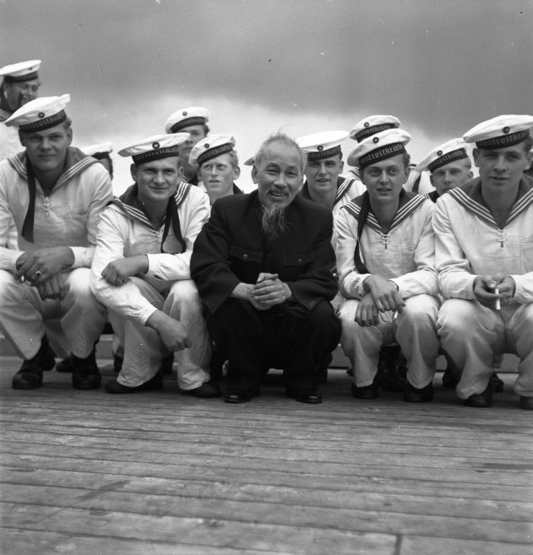
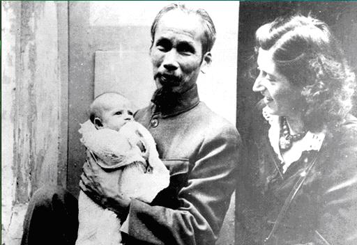

Become resident and VietNam war
July 1967
As fighting escalated, widespread aerial and artillery bombardment all over North Vietnam by the United States Air Force and Navy began with Operation Rolling Thunder. In July 1967, Hồ Chí Minh and most of the Politburo of the Communist Party met in a high-profile conference where they concluded the war had fallen into a stalemate. The American military presence forced the PAVN to expend the majority of their resources on maintaining the Hồ Chí Minh trail rather than reinforcing their comrade's ranks in the South. With his permission, the Việt Cộng planned a massive Tet Offensive that would commence on 31 January 1968, with the aim of taking much of the South by force and administering a heavy blow to the American military. The offensive was executed at great cost and with heavy casualties on Việt Cộng's political branches and armed forces. The scope of the action shocked the world, which until then had been assured that the Communists were "on the ropes". The optimistic spin that the American military command had sustained for years was no longer credible. The bombing of Northern Vietnam and the Hồ Chí Minh trail was halted, and American and Vietnamese negotiators held discussions on how the war might be ended. From then on, Hồ Chí Minh and his government's strategy, based on the idea of avoiding conventional warfare and facing the might of the United States Army, which would wear them down eventually while merely prolonging the conflict, would lead to eventual acceptance of Hanoi's terms materialized.
Personal Life
with Elizabeth'mother,1946
As President, he held formal receptions for foreign heads of state and ambassadors at the Presidential Palace, but he personally did not live there. He ordered the building of a stilt house at the back of the palace, which is today known as the Presidential Palace Historical Site. His hobbies (according to his secretary Vũ Kỳ) included reading, gardening, feeding fish (many of which are still[when?] living) and visiting schools and children's homes
Hồ Chí Minh remained in Hanoi during his final years, demanding the unconditional withdrawal of all non-Vietnamese troops in South Vietnam. By 1969, with negotiations still dragging on, his health began to deteriorate from multiple health problems, including diabetes which prevented him from participating in further active politics. However, he insisted that his forces in the South continue fighting until all of Vietnam was reunited regardless of the length of time that it might take, believing that time was on his side.